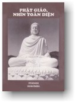
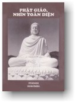

|  |
Phật Giáo, Nhìn Toàn Diện
Hòa thượng Piyadassi Trung tâm Narada, Seattle, Hoa Kỳ, xuất bản, 1995. |
 |
|
BuddhaSasana Home Page |
Vietnamese, with Unicode Times font |
|  |
Phật Giáo, Nhìn Toàn Diện
Hòa thượng Piyadassi Trung tâm Narada, Seattle, Hoa Kỳ, xuất bản, 1995. |
|
|
-1.b- ĐỨC PHẬT (tiếp theo) Ðạo Quả Phật Và Các Thánh Quả Trạng thái hoàn toàn giác ngộ, sự khám phá và chứng ngộ Tứ Diệu Ðế (tức Ðạo Quả Phật) không phải là đặc ân riêng của một chúng sanh tốt phước nào đã được Thần Linh Thiên Hựu chọn trước, cũng không phải là diễn biến duy nhất không bao giờ còn lặp lại trong lịch sử nhân loại. Ðây là thành quả mà bất luận ai cũng có thể thành đạt nếu tận lực tinh tấn chuyên cần tự thanh lọc thân tâm và khai triển trí tuệ đến mức tuyệt hảo và có đủ ý chí sắt đá, kiên trì trau giồi mười pháp ba la mật (pàrami) và Bát Chánh Ðạo, những phẩm hạnh tất yếu để chứng ngộ Ðạo Quả Phật. Ðã có những vị Phật trong quá khứ xa xôi, và trong tương lai sẽ có những vị Phật, khi cần và hội đủ điều kiện thuận lợi. Nhưng ta không cần phải nghĩ đến tương lai xa vời; giờ đây, trong giây phút hiện tại, "cánh cửa Vô Sanh Bất Diệt" đang rộng mở. Những ai bước vào, đạt đến trạng thái tuyệt đối trọn lành (Arahatta), cuối cùng giải thoát, vượt ra khỏi mọi đau khổ (Nibbàna). Ðức Phật long trọng tuyên bố rằng trên phương diện tận diệt ô nhiễm và thành đạt mục tiêu giải thoát cùng tột, những vị ấy cũng đứng ngang hàng với Ngài: "Là những người chiến thắng như ta, quả
thật vậy, Tuy nhiên, Ðức Phật cũng vạch rõ cho hàng môn đệ sự khác biệt giữa vị Toàn Giác và chư vị Arahat (A La Hán) [33], những bậc Thánh Nhân Trọn Lành: "Như Lai, này chư tỳ khưu, trong khi cũng là Arahat, là Toàn Giác, là bậc Chánh Ðẳng Chánh Giác, là người công bố Con Ðường chưa được công bố, là người thấu đạt Con Ðường, là người tận tường hiểu biết Con Ðường, là người thuần thục kinh nghiệm, vẹn toàn trải qua Con Ðường. Và giờ đây, các đệ tử của Như Lai là khách lữ hành bước theo dấu chân của Như Lai. Ðó là sự khác biệt, này chư tỳ khưu, là những điểm đặc thù phân biệt Như Lai, cũng là Arahat (A La Hán), là bậc Toàn Giác, với hàng đệ tử, những người đã thành đạt giải thoát bằng trí tuệ minh sát. [34]" Ðặc Ðiểm Nổi Bật Của Giáo Pháp (Dhamma) Không có những hóc hẻm đen tối của si mê, không có những mạng nhện đầy bí hiểm, không có những gian phòng mịt mù khói tỏa bao trùm bí ẩn, không có "giáo lý bí truyền", không có những tín điều được dấu nhẹm, trong giáo huấn của Ðức Phật, vốn được rộng mở sáng tỏ như ban ngày và trong suốt như thủy tinh. "Giáo pháp và giới luật mà Ðức Phật công bố sáng chói tỏ rạng khi được mở rộng, không phải lúc bị che đậy, giống như mặt trời và mặt trăng, tỏ rạng khi trời quang mây tạnh và lu mờ lúc bị mây che án." Ðức Bổn Sư không chấp nhận lối giáo huấn bao gồm "Mật nghĩa". Ngài dạy, "Mật nghĩa là dấu hiệu của những giáo lý giả mạo." Ngỏ lời cùng Ðức Ànanda Ðức Bổn Sư tỏ bày như sau: "Này Ànanda, Như Lai truyền dạy Giáo Pháp mà không có sự phân biệt nào giữa giáo lý công truyền và giáo lý bí truyền; vì tôn trọng chân lý, này Ànanda, Như Lai không bao giờ làm những việc như có bàn tay nắm lại của một ông thầy còn giấu lại một vài bí ẩn chánh yếu, không truyền hết cho học trò. [35]" Một vị Phật quả thật vô cùng hiếm hoi, nhưng không phải là xa lạ trong lịch sử nhân loại. Ngài không dành cho riêng mình sự giác ngộ tối thượng. Ðối với người Phật tử, một quan điểm tương tợ thật là vô nghĩa và đáng gạc bỏ qua một bên, và đối với Ðức Phật đó là một ước vọng rõ ràng không thể quan niệm được. Với tâm từ và tâm bi, Ðức Phật ban truyền những lời dạy mà không giữ lại pháp môn nào cần thiết để giải thoát con người ra khỏi xiềng xích của vòng luân hồi (samsàra), cuộc đi bất định triền miên lặp đi lặp lại. Giáo huấn của Ðức Phật từ đầu đến cuối được rộng mở cho tất cả những ai có mắt để thấy và có tâm để hiểu biết. Phật Giáo không bao giờ đưa họng súng hay dùng gươm đao để áp bức, cưỡng bách ai. Người Phật tử không bao giờ ép buộc người khác theo tôn giáo mình. Phương pháp cưỡng chế không bao giờ thích nghi đối với Ðức Phật. Ðề cập đến lòng bi mẫn của Ðức Phật, H. Fielding Hall viết trong quyển "The Soul of a People": "Không bao giờ có thể có một cuộc chiến tranh Phật Giáo. Không quốc gia xâm lăng nào mục kích lòng hăng say chiến đấu của những người Phật tử; không người nào bị sát hại, đổ máu giữa nhà, vì kẻ sát nhân lấy danh nghĩa của Ðức Phật. Ngài, và niềm tin nơi Ngài không hề mang một vết máu. Ngài hoằng dương một giáo lý đem lại An Lành Vĩ Ðại, tình thương, lòng từ ái, bi mẫn, và lời dạy của Ngài trong sáng rõ rệt đến độ không bao giờ có thể nhầm lẫn." Trong khi truyền bá Giáo Pháp (Dhamma) Ðức Phật không có bất luận sự phân biệt nào giữa hàng môn đệ, không bao giờ chọn riêng vị đệ tử nào để ban ân huệ, không bao giờ có tình trạng thiên vị. Giữa các môn đệ Ngài, là những vị đã đắc Quả A La Hán, đã tận diệt ô nhiễm và đã phá tan mọi thằng thúc cột trói chúng sanh vào một kiếp sinh tồn mới, các vị ấy đã tiến đạt đến mức thanh tịnh tuyệt đỉnh, trong sạch như nhau. Tuy nhiên có vài vị, vì đặc biệt lỗi lạc hơn trên phương diện trí tuệ hay thực hành nào, và nhờ đó được ưu đãi hơn về mặt tinh thần, như được huynh đệ trọng vọng hơn; nhưng Ðức Bổn Sư không bao giờ ban bố đặc ân cho vị nào mà xem tất cả như nhau. Như Ngài Upàli chẳng hạn, xuất thân từ một gia đình thợ cạo, được Ðức Bổn Sư giao phó nhiệm vụ Tăng Trưởng trong những vấn đề giới luật (vinaya), thay vì chỉ định những vị A La Hán khác mà trước kia thuộc dòng quý phái và chiến sĩ (kshatriya). Hai Ngài Sàriputta và Mahà Moggallàna, sanh trưởng trong gia đình bà la môn, là hai vị đại đệ tử của Ðức Phật, vì đó là nguyện vọng của các Ngài từ trong nhiều tiền kiếp xa xôi. Ngài Sàriputta (Xá Lợi Phất) ưu tú về trí tuệ (pannà), còn Ngài Moggallàna (Mục Kiền Liên), về thần thông (iddhi). Ðức Phật không bao giờ muốn rút tỉa nơi hàng tín đồ một đức tin mù quáng và quỳ lụy phục tùng Ngài hay giáo lý của ngài. Ngài luôn luôn đặt nặng công trình quán xét phân biện và khảo sát sáng suốt. Với những lời lẽ quả quyết, trong một thời Pháp mà về sau được gọi rất đúng là hiến chương đầu tiên về tự do tư tưởng, Ngài mạnh mẽ khuyến khích người Kàlàmas nên sáng suốt quán xét. Vội vã chấp nhận bất luận điều gì rồi đặt niềm tin vào đó quả thật không nằm trong tinh thần Phật Giáo, và ta có thể nhận thức điểm này xuyên qua cuộc đàm thoại giữa Ðức Thế Tôn và một số đệ tử: "Nếu bây giờ , biết và chấp giữ tin chắc điều này, các con có nói chăng rằng, 'Chúng ta tôn vinh Ðức Bổn Sư, vì quý trọng Ngài chúng ta tôn kính những lời dạy của Ngài?' 'Bạch Ðức Thế Tôn, các con không nói như vậy.' 'Ðiều nào mà các con xác nhận, này chư đệ tử, có phải vì chính tự các con đã nhận thức, trông thấy rõ ràng và nắm vững điều ấy không?' 'Ðúng vậy, Bạch hóa Ðức Thế Tôn.'" [36] Ðức Phật đối diện với những sự kiện và từ chối không thừa nhận hoặc tán thành điều gì không phù hợp với chân lý. Ngài không muốn chúng ta chấp nhận bất cứ gì một cách mù quáng, không suy xét trước. Ngài muốn chúng ta thông hiểu sự vật đúng như sự vật là vậy, tập trung mọi cố gắng cần thiết và gia công chú niệm nhằm thành đạt giải thoát. "Các con phải chuyên cần tinh tấn "Các con hãy tự mình cải thiện, tự vươn
lên, Lần đầu tiên trong lịch sử thế giới Ðức Phật dạy rằng không nên tìm giải thoát bằng cách tùy thuộc nơi một đấng cứu thế, dầu vị ấy là người hay thần linh. Ý niệm chủ trương rằng có ai đó nâng đỡ con người từ thấp lên một tầng lớp cao hơn trong đời sống, và rốt cùng cứu thoát luôn, có chiều hướng làm cho con người trở nên lười biếng và yếu hèn, suy nhược, và cuồng si. Tin tưởng như vậy là hạ thấp giá trị con người và làm ngộp tắt mọi tia sáng phẩm cách phát sanh từ đời sống đạo đức. Bậc Toàn Giác kêu gọi hàng tín đồ nên tự tin, tự nương tựa nơi chính mình, không ỷ lại nơi ai khác. Người khác có thể gián tiếp đưa đến ta một cánh tay hỗ trợ, nhưng trạng thái siêu thoát ra khỏi mọi khổ đau phải được mỗi người tự mình trau chuốt cho mình và gia công chuyên cần, đập đẽo, gọt giũa trên hòn đe, bằng chính hành động của mình. Thanh Tịnh Thật Sự Ðể hiểu biết tận tường sự vật, niềm tin và lòng kinh sợ không có một vai trò nào trong tư tưởng người Phật tử. Chân lý của Giáo Pháp (Dhamma) chỉ có thể thành đạt bằng trí tuệ minh mẫn, không bao giờ bằng đức tin mù quáng hay bằng cách sợ sệt một chúng sanh, đã được hay không được biết. Chẳng những Ðức Phật không tán thành đức tin mù quáng và lòng kinh sợ một Thần Linh toàn năng, xem như điều ấy không thích nghi để thấu đạt chân lý, mà Ngài cũng bác bỏ những nghi thức tế lễ không bổ ích, bởi vì những phương cách từ khước kiêng cữ bề ngoài như nhịn đói, xuống sông tắm để gội rửa tội lỗi, làm thịt thú để tế lễ thần linh và những nghi thức tương tợ không có chiều hướng thanh lọc con người, không làm cho con người trở nên thánh thiện và cao quý. Sau đây là cuộc đàm thoại giữa Ðức Phật và vị bà la môn Sundarika Bhàradvàja: Lần nọ Ðức Thế Tôn ngỏ lời cùng chư vị tỳ khưu, giải thích cặn kẻ như thế nào người mong tìm giải thoát phải tu tập, và sau đó Ngài dạy thêm rằng người mà tâm không còn mảy may ô nhiễm, người mà cuộc đời trong sạch đã đến mức toàn hảo, người đã làm xong những gì cần phải làm, người ấy có thể được gọi là tắm rửa nội tâm. Lúc bấy giờ Bhàradvàja, ngồi bên cạnh Ðức Phật, nghe như vậy thì bạch hỏi: "Ðức Gotama có xuống tắm dưới sông Bàhuka không?" "Này Ông Bà La Môn, tắm dưới sông Bàhuka thì có lợi ích gì? Con sông Bàhuka có thể làm gì cho ta?" "Quả thật vậy, Bạch Ðức Tôn Giả Gotama, nhiều người tin tưởng rằng sông Bàhuka rất linh thiêng. Nhiều người đã xuống tắm dưới sông Bàhuka để rửa sạch tội lỗi (pàpa, hành động bất thiện) của mình. Ðức Phật giải thích cho Bhàradvàja rằng tắm nước sông không thể gội rửa những bợn nhơ của tội lỗi, và Ngài dạy ông: "Này Ông Bà La Môn, hãy tắm rửa nơi đây (tức trong Giáo Pháp và Giới Luật này), hãy ban bố trạng thái châu toàn cho tất cả chúng sanh. Nếu Ông không nói lời giả dối, hoặc không sát sanh hay không trộm cắp, nếu Ông đáng được tin cậy và không xấu xa đê hèn thì đi tắm dưới sông Gayà (tên một con sông ở Ấn Ðộ vào thời Ðức Phật) có lợi ích gì? Cái giếng nước của chính nhà Ông cũng là một con sông Gayà rồi." [39] Vấn Ðề Giai Cấp Giai cấp là vấn đề tối quan trọng đối với người bà la môn Ấn Ðộ, nhưng đối với Ðức Phật thì rõ ràng không đáng lưu tâm đến. Ngài mạnh dạn đả kích hệ thống phân chia đẳng cấp, xem đó là đê hèn. Giáo Hội Tăng Già gồm đủ người ở tất cả mọi tầng lớp xã hội, giống như sông rạch khắp cùng đều tụ hội, tuông chảy về biển cả. Những vị này gác bỏ lại danh tánh, giai cấp, đẳng cấp và trở thành những thành viên của một cộng đồng -- Tăng Già (Sangha). Nói về tánh cách bình đẳng của tất cả những thành viên trong Giáo Hội Tăng Già Ðức Phật dạy: "Này chư tỳ khưu, cũng dường những ngọn sông to lớn như Gangà, Yamunà, Aciravati, Sarabhù và Mahì, khi đổ ra biển thì bỏ lại tên riêng và lý lịch của mình, rồi được xem là biển cả, cùng thế ấy, này chư tỳ khưu, từ bốn giai cấp (vannas) ... những người ly gia cắt ái, trở thành tu sĩ không nhà cửa trong Giáo Pháp và Giới Luật mà Như Lai công bố, cũng mất đi danh tánh và lý lịch của họ và được xem là con dòng Sàkya (Thích Ca)" (Udàna 55). Quan điểm của người Phật tử về vấn đề chủng tộc và kỳ thị chủng tộc đã được tỏ bày rõ rệt. Quan điểm ấy cũng được phản ảnh trong chủ trương đạo đức và khoa học của UNESCO trong thế kỷ hiện đại (Tuyên ngôn về Chủng Tộc và Thành Kiến Chủng Tộc, UNESCO 1978). [40] Ðể trả lời vị bà la môn Sundarika Bhàradvàja, muốn tìm hiểu dòng dõi Ngài, Ðức Phật nói: "Ta không phải bà la môn, không phải
hoàng tử, Trong trường hợp khác, một người bà la môn có ý phân chia đẳng cấp, mắng chưởi Ðức Phật là "bọn tăng lữ!", hạng "cùng đinh!" Ðức Bổn Sư không hề cảm nghe ô nhục vì thế mà ôn tồn giải đáp: "Sự sanh trưởng không làm cho con người
là cùng đinh, và Ngài thuyết giảng trọn thời Pháp, bài kinh Vasala Sutta (Sutta-nipàta) giải thích cho vị bà la môn từng chi tiết những đặc điểm của người thật sự là cùng đinh (vasala). Ðược cảm hóa, vị bà la môn ngạo mạn xin quy y với Ðức Phật (Xem "The Book of Protection, trang 91, cùng Ðại Ðức tác giả). Ðức Phật thâu nhận vào Giáo Hội một cách tự do và bình đẳng, những người đến với Ngài từ mọi chủng tộc và mọi đẳng cấp, khi biết rằng người ấy có thể sống đời thánh thiện, và vài người này đã trở nên lỗi lạc. Ðức Phật là vị giáo chủ duy nhất trong thời hiện đại đã cố gắng pha trộn lẫn nhau trong tinh thần khoan dung và thuận thảo, những người mà nếu không, sẽ bị phân cách trong những tầng giai cấp khác nhau. Ngài Upàli, vị Tăng Trưởng trong vấn đề Vinaya -- giới luật của Giáo Hội -- trước khi xuất gia là một người thợ cạo, nghề sinh sống mà thời bấy giờ được xem là hạ cấp nhất. Sunìta, về sau đắc Quả A La Hán, là người hốt rác, một nghề hạ tiện khác. Trong Giáo Hội Tỳ Khưu Ni có hai bà Punnà và Punnikà, cả hai là người nô lệ. Theo Mrs. C.A.F. Rhys Davids, tám phần trăm rưởi (8 1/2%) trong số các vị tỳ khưu ni đã có đủ khả năng chứng ngộ đạo quả là những người đã đến từ những giai cấp hạ lưu, phần đông là thất học. [42] Những Vị Ðại Ðệ Tử Ràjagaha (Vương Xá), kinh đô của vương quốc Magadha (Ma Kiệt Ðà), là một trong những địa điểm được Ðức Phật quang lâm đến trước nhất sau khi Thành Ðạo. Khi còn là đạo sĩ du phương, trong những ngày đầu tiên sau khi xuất gia, Ðức Phật đã có lời hứa với Vua Bimbisàra (Bình Sa Vương) xứ Seniya rằng sau khi viên mãn thành tựu mục tiêu Ngài sẽ trở lại viếng Ràjagaha. Vua Bimbisàra vui mừng không xiết kể khi gặp lại Ðức Phật. Sau khi nghe được một thời Pháp vua liền xin quy y. Lòng nhiệt thành quý mến Ðức Phật cao đến độ trong vài ngày vua dâng ngự uyển Veluvana lên Ðức Phật, để thiết lập một ngôi chùa. Vào thủa bấy giờ Ràjagaha là một trung tâm văn hóa to lớn, nơi có nhiều hệ thống triết học đang thời kỳ dồi dào phong phú. Một trong các hệ thống tư tưởng này do Sanjaya lãnh đạo; và trong hàng môn đệ của Sanjaya có hai, trong hai trăm năm mươi vị, là Upatissa và Kolita, mà về sau trở thành Sàriputta (Xá Lợi Phất) và Moggallàna (Mục Kiền Liên), hai vị đệ tử đứng hàng đầu của Ðức Phật. Một hôm nọ, khi Upatissa đang rão bước trên đường phố Ràjagaha thì chàng lấy làm cảm kích trước phong độ thanh nhã, trầm lặng và phẩm cách cao quý của vị đệ tử đầu tiên của Ðức Phật, Ngài A La Hán Assaji (A Tư Ðà), lúc ấy đang đi trì bình. Tất cả tâm thành, tất cả những công phu mà từ nhiều kiếp sống Upatissa đã kiên trì gia công để thành tựu viên mãn, giờ đây đã đến lúc thâu hoạch thành quả. Upatissa không trở về với thầy mình mà theo chân vị A La Hán Assaji đến nơi Ngài ngồi lại nghỉ, nóng lòng muốn biết Ngài học giáo lý của ai và giáo lý ấy như thế nào. "Này Ðạo Hữu," Upatissa nói, "diện mạo của Ðạo Hữu thật là trang nghiêm, trầm lặng, dung nhan của Ðạo Hữu trong suốt sáng ngời. Ai khuyến khích Ðạo Hữu từ bỏ thế gian? Ai là thầy của Ðạo Hữu? Ðạo Hữu thực hành Giáo Pháp nào?" Ngài Assaji vốn người ít nói, từ tốn trả lời: "Sư không thể giải thích dong dài Giáo Pháp và Giới Luật, nhưng có thể vắn tắt tóm lược ý nghĩa." Câu nói của Upatissa đáng được chú ý: "Ðúng như vậy, này Ðạo Hữu, nói nhiều hay ít cũng được, điều tôi muốn nghe chỉ là ý nghĩa. Tại sao phải dùng nhiều lời?" Lúc bấy giờ vị A La Hán Assaji nói lên một câu kệ bao gồm toàn thể giáo lý nhân quả của Ðức Phật: "Ye dhammà hetuppabhavà -- tesam hetum
tathàgato àha "Về các pháp phát sanh do nhân, Như Lai
đã chỉ dạy nhân ấy, Trong tức khắc, Upatissa lãnh hội ý nghĩa và chứng đắc tầng Thánh đầu tiên, thấu triệt "bất luận gì có bản chất của sự phát sanh, tất cả những gì có bản chất của sự chấm dứt" (yamkinci samudaya dhammam sabbam tam nirodha dhammam). Lòng vui mừng khấp khởi, Upatissa mau mau về tìm bạn, Kolita, để thuật rõ cuộc gặp gở vị A La Hán và giáo huấn được thọ nhận. Kolita cũng vậy, tức khắc chứng đắc tầng Thánh đầu tiên khi nghe Upatissa lặp lại Giáo Pháp. Rồi cả hai cùng nhau đến gặp Sanjaya thầy mình, khuyên thầy theo về Ðức Phật. Nhưng Sanjaya từ chối vì sợ mất tiếng đạo sư. Upatissa và Kolita liền từ giả thầy, đến Tịnh Xá Veluvana (Trúc Lâm) xin xuất gia với Ðức Phật. Ðức Phật hoan hỷ đón mừng với lời kêu gọi, "Hãy lại đây, này tỳ khưu, Giáo Pháp đã được công bố đầy đủ. Hãy sống đời thánh thiện để trọn vẹn chấm dứt đau khổ (dukkha)," và chấp nhận hai vị vào Giáo Hội. Về sau hai Ngài thành tựu giải thoát và trở nên hai vị đứng đầu trong hàng đệ tử Phật. Một nhân vật quan trọng khác được thâu nhận vào Giáo Hội trong lúc Ðức Phật lưu ngự tại Veluvana là vị bà la môn hiền triết Mahà Kassapa (Ma Ha Ca Diếp). Ngài từ bỏ một sự nghiệp đồ sộ để tìm giải thoát. Chính Ngài Ðại Ðức Mahà Kassapa, ba tháng sau khi Ðức Phật nhập Ðại Niết Bàn (parinibbàna), đã triệu tập cuộc họp chư vị A La Hán (Kết Tập Tam Tạng Lần Thứ Nhất), tại Ðộng Sattapanni gần Ràjagaha, dưới sự bảo trợ của Vua Ajàtasattu (A Xà Thế), để thu thập và kết tập Giáo Pháp và Giới Luật. Giáo Hội Chư Tỳ Khưu Ni Trong những ngày đầu tiên, chỉ có người nam mới được chấp nhận vào Giáo Hội Tăng Già (Sangha) vì Ðức Phật không sẵn sàng thâu nhận nữ giới. Tuy nhiên trong hàng thiện tín, phái nữ có nhiều người tâm đạo nhiệt thành, hết lòng mong muốn sống đời xuất gia. Lòng thành thật khẩn khoản mong cầu ấy thúc giục Bà Pajàpati Gotami, kế mẫu của Ðức Phật, cùng một nhóm nhiều vị mạng phụ phu nhân đến kính cẩn bạch Phật xin cho người phụ nữ được xuất gia. Nhưng Ðức Phật còn do dự. Nhận thấy nỗi băn khoăn thất vọng và nhiệt tâm của các bà, Ðức Ànanda đứng ra ủng hộ, khẩn khoản thỉnh cầu Ðức Phật. Cuối cùng Ðức Phật chấp thuận, nhưng ban hành tám giới căn bản cho hàng phụ nữ xuất gia. Như vậy, lần đầu tiên trong lịch sử, Giáo Hội Tỳ Khưu Ni (Bhikkhunì Sàsana) được thành lập vào năm thứ năm sau khi Ðức Phật Thành Ðạo, trước đó chưa bao giờ có một Giáo Hội để cho hàng phụ nữ có thể xuất gia sống độc thân. Từ mọi tầng lớp trong đời sống, mọi người phụ nữ đều có thể gia nhập Giáo Hội. Ðứng hàng đầu là hai vị Khemà và Uppalavannà. Ðời sống của một số đông các vị tỳ khưu ni cao quý ấy, mức độ gia công chuyên cần của các bà nhằm thành đạt mục tiêu cứu cánh và những bài kệ khải hoàn mà các bà hoan hỷ đọc lên khi tâm được giải thoát, đã được mô tả một cách sống động trong những bài Thánh Thi của chư Tỳ Khưu Ni (Therigàthà). Tại Kapilavatthu Trong khi lưu ngự tại Ràjagaha, Ðức Thế Tôn hay tin vua cha mong muốn được Ngài trở về thăm, nên lên đường về Kapilavatthu (Ca Tỳ La Vệ). Tuy nhiên, Ngài không đi ngay vào hoàng cung mà, theo lệ thường, dừng chân nghỉ trong một cái động phía ngoài thành. Ngày hôm sau, tay mang bát, Ngài đi từ nhà này sang nhà kia trên đường phố Kapilavatthu. Vua Suddhodana (Tịnh Phạn) nghe biết vậy lấy làm kinh ngạc, vội vã đến gặp Ðức Phật và bảo: "Bạch Ðức Thế Tôn, tại sao Ngài làm nhục nhã hoàng tộc như vậy? Tại sao Ngài lại đi khất thực như vậy? Trong dòng dõi chúng ta chưa có ai từng đi xin ăn như thế." Ðức Phật trả lời: "Tâu Ðại Vương, Ðại Vương và những người trong hoàng tộc có thể xưng là con cháu dòng vua. Như Lai thuộc về dòng dõi của chư Phật từ ngàn xưa, và chư Phật khất thực, chỉ sống nhờ vật thực đi bát." Rồi giải thích Giáo Pháp, Ðức Bổn Sư nói, "Hãy thức tỉnh, luôn luôn chú niệm và có cuộc sống chân chánh. Hãy chân chánh sống hạnh phúc trong thế gian này và thế gian sau này." Ðức vua kiên cố vững bước trên Con Ðường và chứng ngộ Giáo Pháp. Lúc bấy giờ vua cung thỉnh Ðức Phật về hoàng cung, nơi đây tất cả hoàng thân đều ra đón mừng và đảnh lễ Ngài, ngoại trừ Công Chúa Yasodharà. Ngài đến với bà. Bà phủ phục đảnh lễ dưới chân Ngài. Rồi Ðức Phật thuật câu chuyện Túc Sanh Truyện Candakinnara Jàtaka [43] kể lại những phẩm hạnh của bà cao cả như thế nào trong kiếp sống ấy, và hướng dẫn bà vào Giáo Pháp. Về sau, khi Ðức Phật được cung thỉnh thành lập Giáo Hội dành cho nữ giới, bà trở thành một trong những vị tỳ khưu ni đầu tiên, rồi chứng ngộ Ðạo Quả A La Hán, tầng Thánh cao nhất. Khi Ðức Phật vào đến hoàng cung, Công Chúa Yasodharà ăn mặc chỉnh tề cho con là Ràhula (La Hầu La), rồi chỉ Ðức Phật và nói, "Kìa là cha con, này Ràhula, hãy đến cha và xin cái gia tài của con." Hoàng Tử Ràhula đi đến Ðức Phật, đứng trước mặt Ngài và bạch: "Quả thật mát mẻ, này bậc Sa Môn, cái bóng của Ngài quả thật mát mẻ dễ chịu." Khi Ðức Phật độ thực xong và rời hoàng cung Hoàng Tử Ràhula đi theo Ngài xin, "Xin Ngài trao lại cho con phần di sản của con." Lúc bấy giờ Ðức Phật nói với vị đại đức A La Hán Sàriputta, "Như vậy, này Sàriputta, hãy đưa Ràhula vào Giáo Hội." Ðức Sàriputta làm lễ xuất gia cho Ràhula [44]. Bộ Majjhima Nikàya, Trung A Hàm, một trong năm bộ A Hàm của Tạng Kinh trong kinh điển Pali, có ba bài kinh (số 61, 62, 147) tựa đề Ràhulovàda hay những lời khuyên dạy Ràhula do Ðức Phật thuyết giảng cho sa di Ràhula. Ba thời kinh này hoàn toàn khuyên dạy về giới luật và pháp hành thiền. Sau đây là một đoạn được trích từ Kinh Mahà Ràhulovàda Sutta [45]: "Hãy trau giồi pháp niệm tâm từ (mettà), này Ràhula; bởi vì tâm từ được trau giồi sẽ diệt sân hận. Hãy trau giồi pháp niệm tâm bi (karunà), này Ràhula, bởi vì tâm bi được trau giồi sẽ diệt tánh hung bạo. Hãy trau giồi pháp niệm tâm hỷ (mudità), này Ràhula, bởi vì tâm hỷ được trau giồi sẽ diệt lòng ganh tỵ. Hãy trau giồi pháp niệm tâm xả (upekhà), này Ràhula, bởi vì tâm xả được trau giồi sẽ diệt thù hận. Hãy trau giồi pháp niệm thân bất tịnh (asubha), này Ràhula, bởi vì niệm thân ô trược sẽ diệt tâm tham ái. Hãy trau giồi pháp niệm lý vô thường (anicca-sannà), này Ràhula, bởi vì niệm vô thường sẽ diệt kiêu căng ngã mạn (asmi-màna). Hãy trau giồi pháp niệm hơi thở-vô-thở-ra (ànàpàna sati), này Ràhula, thở-vô-thở-ra với chú niệm, này Ràhula, được trau giồi và thường xuyên thực hành, sẽ đem lại nhiều thành quả tốt đẹp, rất lợi ích." Nữ Giới Trong Phật Giáo Nhìn tổng quát, vào thời Ðức Phật, do ảnh hưởng của Hồi Giáo, pháp quyền của người phụ nữ không mấy được thừa nhận, đôi khi cũng bị khinh khi và làm nô lệ cho đàn ông. Chính Ðức Phật nâng cao phẩm giá của nữ giới và có nhiều trường hợp cho thấy rằng người phụ nữ rất uyên thâm trong vấn đề triết học. Ngài mở rộng tâm từ, tâm bi, luôn luôn tôn trọng nữ giới và chỉ dạy cho hàng phụ nữ con đường đưa đến thanh bình an lạc, trong sạch và thánh thiện. Ðức Thế Tôn nói: "Mẹ là bạn lành trong gia đình. Vợ là người bạn cao quý nhất của chồng." Ðức Phật không từ chối lời cung thỉnh trai tăng của Ambapàli mặc dầu bà mang tiếng xấu [46]. Dù thức ăn mà bà dâng lên Ngài như thế nào, Ngài chấp nhận, và trả lại, Ngài ban truyền cho bà Pháp Bảo (dhammadàna), quà tặng chân lý. Trong tức khắc, lời dạy của Ngài cảm hóa bà và, từ bỏ cuộc sống không chánh đáng trong thế tục, bà xin gia nhập Giáo Hội chư Tỳ Khưu Ni. Nhiệt thành với đạo pháp và tinh tấn chuyên cần thực hành, bà sớm chứng ngộ Thánh Quả. Bà Kisàgotami là một thiếu phụ khác đã được tâm bi vô lượng của Ðức Phật chiếu cố đến. Câu chuyện của bà là một trong những mẫu chuyện cảm kích nhất được ghi chép trong kinh điển. (Xin xem chương 12, "Người Phụ Nữ Trong Văn Học Phật Giáo"). Nhiều thí dụ khác cho thấy Ðức Phật giúp đỡ và an ủi những người phụ nữ đau khổ trong cuộc sống thăng trầm. Chăm Sóc Người Bịnh Lòng bi mẫn của Ðức Bổn Sư đối với người bệnh quả thật không bờ bến. Một hôm Ðức Thế Tôn thấy một vị sư bịnh, Ðại Ðức Pùtigatta Tissa, trăn trở trên giường đầy những đớm vấy bẩn vì một ung nhọt lở loét. Tức thì Ngài đun nước nóng, và cùng với Ngài Ànanda, tự chính tay dịu dàng săn sóc, rửa sạch ung nhọt, và truyền dạy Giáo Pháp, giúp cho sư đắc Quả A La Hán trước khi viên tịch. Trong một trường hợp khác, Ngài chăm sóc một vị sư bịnh và dạy hàng môn đệ như sau: "Bất luận ai hết lòng chăm sóc người bịnh, này chư tỳ khưu, là hành theo lời dạy của Như Lai (cũng như chăm sóc Như Lai, tôn vinh Như Lai) [47]. Khi vị A La Hán Tissa viên tịch, nghi lễ hỏa táng được thực hành đầy đủ và Ðức Phật dạy đem xá lợi Ngài tôn trí trong một bảo tháp [48]. Tâm từ (mettà) của Ðức Phật bao trùm cùng khắp càn khôn vũ trụ và vô lượng vô biên. Lời kêu gọi khẩn thiết của Ngài đến hàng môn đệ là: "Cũng giống như bà từ mẫu tâng tiu bảo
bọc con, Hành động của Ngài luôn luôn nhất trí với những điều Ngài dạy, lúc nào cũng thấm nhuần từ ái và bi mẫn. Trong khi du hành từ làng này sang làng khác, từ thị trấn nọ đến thành phố kia, để giáo huấn, giác tỉnh và đem hạnh phúc đến cho nhiều người, Ðức Phật nhận thấy trong dân gian những hạng người dị đoan mê tín, những người đã lún sâu dưới lớp bùn vô minh, sát sanh hại vật để tế lễ thần linh. Ngài nói với họ: "Sự sống, tất cả mọi người đều có thể
cướp Như vậy, trong khi con người van vái thần linh để được thương xót, chính họ lại không đoái thương loài cầm thú, trong khi xứ Ấn Ðộ bị hoen ố vì tập tục hy sinh những con thú vô tội, đặt trên bàn thờ để tế lễ những thần linh tưởng tượng, trong khi nghi thức tế lễ của những vị đạo sĩ và những vị bà la môn đem lại tai ương và đau khổ tàn bạo, thì Ðức Phật Ðại Từ Ðại Bi chỉ dạy Con Ðường Cũ Xa Xưa của các bậc Toàn Giác, của lối sống chân chánh, của tình thương và của tâm hiểu biết lẫn nhau. Mettà, hay tâm từ, là phương thuốc giải độc công hiệu nhất để đối trị lòng sân hận bên trong chúng ta. Tâm từ cũng là món thần dược công hiệu nhất để đối trị lòng sân hận của người khác đối với chúng ta. Hãy nới rộng tình thương, tung rải đến tất cả những ai cần, với tâm tự do và vô lượng. Ngôn ngữ của tâm, ngôn ngữ xuất phát từ tấm lòng chân thật lúc nào cũng đơn giản, dịu hiền và đầy năng lực. Tâm Xả Và Trầm Lặng Giữa những thăng trầm của cuộc sống -- được và thua, danh thơm và tiếng xấu, tán dương và khiển trách, hạnh phúc và đau khổ -- Ðức Phật không bao giờ lay chuyển. Ngài vững chắc như một tảng đá kiên cố. Trong hạnh phúc hay trong đau khổ, Ngài không phấn khởi cũng không để tinh thần sút kém. Ngài không bao giờ khuyến khích cãi vã ồn ào hay ác cảm thù hận. Có lần Ngài nói với các vị tỳ khưu: "Như Lai không cãi vã với thế gian, chính thế gian cãi vã với Như Lai. Người đi trên con đường của Giáo Pháp (Dhamma) không cãi vã với bất luận ai trong thế gian." [51] Ngài dạy chư vị đệ tử với những lời lẽ như sau: "Như voi chiến lâm trận địa, hứng lãnh
lằn tên mũi đạn, Devadatta Một thí dụ điển hình về thái độ tinh thần của Ðức Phật được thấy rõ rệt trong mối liên hệ của Ngài đối với Devadatta (Ðề Bà Ðạt Ða). Devadatta là em họ của Ðức Phật, có gia nhập vào Giáo Hội và chứng đắc nhiều thần thông tại thế (puthujjana-iddhi). Nhưng về sau, vì mãi ôm ấp trong lòng tham vọng nắm quyền lãnh đạo Tăng Già (sangha), ông bắt đầu sanh tâm ganh tỵ và ác cảm đối với Ðức Phật và hai vị đại đệ tử, Sàriputta và Moggallàna. Devadatta khéo léo lấy được lòng, và trở nên người thân tín của Hoàng Tử Ajàtasattu (A Xà Thế), con Vua Bimbisàra (Bình Sa Vương). Ngày nọ, khi Ðức Thế Tôn ngự tại Tịnh Xá Veluvana (Trúc Lâm) cùng với một nhóm tỳ khưu, có cả vua hiện diện, Devadatta đến gần Ðức Phật, đảnh lễ và bạch: "Bạch Ðức Thế Tôn, đến nay thì Ngài đã già yếu. Kính xin Ðức Bổn Sư hãy an nghĩ thanh nhàn, khỏi phải lo lắng mệt nhọc. Con sẽ đứng ra dìu dắt Giáo Hội." Ðức Phật bác bỏ lời thỉnh cầu, và Devadatta tức giận ra về, lòng bồi hồi nuôi dưỡng thù hận và ác cảm với Ðức Thế Tôn. Với ác ý cố tình chia rẽ, ông đến với Hoàng Tử Ajàtasattu và khơi dậy nơi hoàng tử ngọn lửa tham vọng tai hại. Ông xúi giục: "Này hởi Hoàng Tử trẻ tuổi, nếu giờ đây Hoàng Tử không hạ sát vua cha để chiếm ngôi báu thì đến chết Ngài cũng chưa được làm vua. Phần tôi, sẽ giết Ðức Phật và trở thành Giáo Chủ." Do đó Ajàtasattu giết vua cha và lên ngôi. Devadatta thuê mướn bọn hung tàn ám sát Ðức Phật, nhưng thất bại. Chính ông lăn đá từ đỉnh cao xuống, ngay lúc Ðức Phật đang trèo lên ngọn núi Gijjhakùta trong thành Ràjagaha (Vương Xá). Ðá lăn nhanh xuống, bể ra làm hai và một mảnh vụn làm tổn thương Ðức Thế Tôn. Về sau Devadatta cho voi uống rượu rồi chạy sả vào tấn công Ðức Phật, nhưng Ðức Phật lấy tâm từ cảm hóa, và voi say khấu đầu quỳ lạy dưới chân Ngài. Kế đó Devadatta lại âm mưu chia rẽ Tăng Già, nhưng mối bất hòa giữa chư tăng không kéo dài. Bị thất bại từ âm mưu này đến âm mưu khác Devadatta về già trở thành người thất chí và suy nhược. Sau khi ngã bịnh, trên giường bịnh ông sớm ăn năn hối hận về những điên rồ của mình, ngõ lời muốn đến hầu Phật. Nhưng ước vọng ấy không thành tựu; bởi vì khi được khiêng đi dọc đường thì ông qua đời. Dầu sao, trước khi chết ông thốt ra những lời hối tiếc và mong tìm nương tựa nơi Ðức Phật. [53] Những Ngày Cuối Cùng Kinh Mahà Parinibbàna Sutta (Kinh Ðại Niết Bàn) [54], bài kinh đề cập đến cảnh Ðức Thế Tôn nhập Niết Bàn, có tường thuật với nhiều chi tiết rất cảm động, tất cả những diễn biến xảy ra trong những ngày tháng cuối cùng của Ðức Phật. Giờ đây Ðức Thế Tôn đã tám mươi tuổi thọ; hai vị đại đệ tử Sàriputta và Mahà Moggallàna, đã viên tịch được ba tháng. Hai bà Pajàpati Gotami và Yasodharà cùng với Ðại Ðức Ràhula cũng không còn. Lúc bấy giờ Ðức Phật ngự tại Vesàli, và mùa mưa sắp đến. Ngài cùng một nhóm đông tỳ khưu đi Beluva để an cư kiết hạ. Một cơn bệnh trầm trọng làm cho Ngài đau đớn vô cùng nhưng Ðức Thế Tôn, luôn luôn giác tỉnh chú niệm và tự làm chủ lấy mình, vẫn trầm tĩnh nhẫn nại chịu đựng. Ngài đã gần đến lúc lâm chung nhưng cảm nghe không nên viên tịch mà không có lời nào giả từ Giáo Hội. Do đó, Ngài cố gắng vận dụng ý chí đè nén cơn đau, và bám lấy sự sống. Bịnh dần dần thuyên giảm. Khi đã bình phục lại như thường Ngài gọi Ðức Ànanda, vị thị giả thân tín, và bảo: Này Ànanda, nay Như Lai đã niên cao tuổi lớn, cuộc hành trình của Như Lai đã đến mức tận cùng. Như Lai đã trải qua suốt cuộc đời, giờ đây đã tám mươi tuổi thọ; và cũng như chiếc xe quá cũ kỹ, này Ànanda, chỉ có thể xử dụng được nếu ta hết sức thận trọng gìn giữ, cùng thế ấy, cơ thể của Như Lai chỉ có thể hoạt động nếu được bồi bổ với nhiều ý chí. Chỉ khi Như Lai ngưng hẳn, không lo nghĩ việc ngoài đời và không kinh nghiệm những cảm xúc của thế gian, tiến đến tâm định không dấu hiệu (animita), và sống trong trạng thái ấy -- chí đến chừng ấy thân của Như Lai mới thoải mái dễ chịu. "Như vậy, này Ànanda, hãy lấy chính con làm hải đảo của con. Chính con làm nương tựa cho con. Không nên ỷ lại nơi ai khác để làm chỗ nương tựa. Hãy bám sát Giáo Pháp như một hải đảo. Hãy bám sát Giáo Pháp như chỗ nương tựa. Không trông cậy nơi ai để làm chỗ nương tựa. Bất luận ai, này Ànanda, dầu trong hiện tại hay sau khi Như Lai viên tịch, lấy chính mình làm hải đảo cho mình, không còn phải nương tựa nơi nào ở ngoại cảnh -- chính những người ấy trong nhóm môn đệ của Như Lai, này Ànanda, sẽ tiến đạt đến mức cao tuyệt đỉnh! Nhưng những người ấy phải tận lực gia công để tiến hóa." Từ Beluva Ðức Phật đi đến Mahavana. Nơi đây Ngài triệu tập tất cả quý vị tỳ khưu lúc ấy cư ngụ trong vùng Vesàli, và khuyên dạy: "Này chư môn đệ, Giáo Pháp mà Như Lai chứng ngộ, Như Lai đã làm cho các con chứng ngộ. Các con hãy vững vàng làm chủ Giáo Pháp, hãy thực hành, quán niệm Giáo Pháp và truyền bá hoằng dương; vì lòng bi mẫn thương xót thế gian, vì sự tốt đẹp, vì lợi ích và hạnh phúc của chư thiên và nhân loại." Và Ðức Phật kết thúc lời kêu gọi: "Tuổi thọ của Như Lai đã cao, đời sống của Như Lai đã đến mức tận cùng; từ giả các con, Như Lai ra đi, chỉ trông cậy nơi một mình chính Như Lai! Hãy chuyên cần, này chư môn đệ, nuôi dưỡng tràn đầy những tư tưởng thánh thiện! Hãy quyết tâm vững chắc! Hãy theo dõi canh phòng tâm! Kẻ nào không chán ngán mệt mỏi mà bám sát nắm vững Giáo Pháp và Giới Luật sẽ vượt qua biển trầm luân của đời sống, chấm dứt sầu muộn." Ðức Thế Tôn giờ đây đã suy yếu bịnh hoạn, chân mỏi gối dùn, tiếp tục cuộc hành trình một cách khó khăn, theo sau có Ðức Ànanda và đông đảo chư tỳ khưu. Chí đến trong chuyến đi dài dẳng và cam go cuối cùng này, Ðức Phật cũng không bao giờ ngừng chăm lo kẻ khác. Ngài khuyên dạy người thợ rèn Cunda, đã dâng cúng buổi cơm cuối cùng, rồi trên đường đi, dừng bước để giáo hóa Pukkusa, một đệ tử của Àlàra Kàlama, giải tỏa những thắc mắc của ông, và truyền dạy Giáo Pháp. Pukkusa xin theo về nương tựa nơi Phật, Pháp, Tăng. Ðức Thế Tôn giờ đây đã đến Rừng Long Thọ (Sala Grove) của dòng Mallas, tại Kusinàrà (Câu Thi Na) -- mức cùng của cuộc hành trình. Biết rằng đây là nơi dừng chân cuối cùng, Ngài bảo Ðại Ðức Ànanda: "Như Lai đã mệt mỏi, này Ànanda, và sẽ nằm. Con hãy trải cho Như Lai chỗ nằm giữa hai cây song long thọ, đầu về hướng Bắc." Rồi Ngài nằm nghiêng mình bên phải, trầm lặng và giác tỉnh chú niệm, chân này đặt trên chân kia. Ngõ lời với Ðại Ðức Ànanda Ðức Thế Tôn truyền dạy: "Những ai đã làm xong bổn phận lớn và nhỏ, những ai sống chân chánh, những ai đi xuyên qua cuộc đời thích ứng với giới luật -- chính những người ấy làm vinh dự, sùng bái và tôn kính Như Lai, đấng Toàn Thiện, với lòng kỉnh mộ xứng đáng nhất. Như vậy, này Ànanda, hãy vững chắc thực hành những bổn phận lớn và nhỏ, sống chân chánh, và đi xuyên qua cuộc đời thích ứng với giới luật. Này Ànanda, con nên tu tập như thế ấy." Vị Ðệ Tử Cuối Cùng Vào lúc bấy giờ tại Kusinàrà có một đạo sĩ du phương tên Subhadda, nghe tin Ðức Phật sắp nhập diệt thì vội vã đến khu Rừng Long Thọ để nhờ Ðức Phật làm sáng tỏ vài thắc mắc đã khuấy động tâm ông. Nhưng Ngài Ànanda không để cho Subhadda vào mặc dầu ông cố nài nỉ, vì không muốn Ðức Phật phải bận lòng vào giờ phút cuối cùng. Ðức Thế Tôn nghe được. Ngài biết liền rằng Subhadda thật lòng muốn tìm hiểu và biết rằng ông ta có đủ khả năng lãnh hội lời dạy một cách dễ dàng. Ngài bảo cho Subhadda vào. Hoài nghi của Subhadda là không biết các vị lãnh đạo của những hệ thống tư tưởng khác như Pùrana Kassapa, Nigantha Nàtaputta và những vị khác nữa có thật sự hiểu biết chân lý không. Lúc bấy giờ Ðức Thế Tôn dạy: "Trong bất luận Giáo Pháp và Giới Luật nào (dhamma-vinaya), này Subhadda, không có Bát Chánh Ðạo thì không có hạng nhất đẳng sa môn, cũng không có nhị đẳng, tam đẳng hay tứ đẳng sa môn [55]. Và trong bất luận Giáo Pháp và Giới Luật nào, này Subhadda, có Bát Chánh Ðạo thì cũng có hạng nhất đẳng sa môn, cũng có hạng nhị đẳng sa môn, hạng tam đẳng và tứ đẳng sa môn. Giờ đây, trong Giáo Pháp và Giới Luật này, Subhadda, có Bát Chánh Ðạo, và trong ấy cũng có những bậc sa môn đã thật sự chứng đắc bốn tầng thánh. Trong hệ thống của những vị lãnh đạo khác không có ai thật sự chứng đắc thánh quả. Và trong Giáo Pháp và Giới Luật này, Subhadda, có những người sống chân chánh, như vậy thế gian sẽ không vắng bóng các bậc A La Hán." Nghe qua những lời Phật dạy Subhadda càng vững chắc niềm tin, xin quy y Phật, Pháp và Tăng. Hơn nữa, ông xin được xuất gia, và Ðức Phật dạy Ngài Ànanda truyền giới và thâu nhận vào Giáo Hội Tăng Già. Như vậy Subhadda trở thành vị đệ tử cuối cùng của Ðức Thế Tôn. Không bao lâu, nhờ nhiệt tâm chuyên cần tinh tấn, Subhadda đắc tầng Thánh cuối cùng, Ðạo Quả A La Hán. Quang Cảnh Cuối Cùng Lúc bấy giờ Ðức Thế Tôn ngỏ lời khuyên dạy: "Như Lai đã truyền dạy Giáo Pháp, này Ànanda, mà không có sự phân biệt giữa giáo huấn bí truyền và giáo huấn công truyền, bởi vì đối với Chân Lý, Ànanda, Như Lai không có gì giống như 'bàn tay nắm lại' của một vị thầy còn giấu học trò một vài sở kiến chánh yếu nào. "Này Ànanda, có thể vài người trong các con nghĩ rằng, 'Tiếng nói của Ðức Bổn Sư đã chấm dứt. Chúng ta không còn thầy giảng dạy.' Nhưng Ànanda, chúng con không nên suy tư như thế. "Giáo Pháp và Giới Luật (dhamma-vinaya) mà Như Lai đã đặt để và ban hành cho các con, sau khi Như Lai nhập diệt, hãy nhận Giáo Pháp và Giới Luật ấy là thầy của chúng con. Này chư tỳ khưu, có thể vài người trong các con còn hoài nghi về Phật, hay về Pháp, hay về Con Ðường (magga), hay về Phương Pháp (patipadà). Hãy tự do khảo sát và tìm hiểu, này chư tỳ khưu. Không nên ăn năn tự trách, nghĩ rằng: 'Khi còn diện đối diện với thầy tại sao ta không nêu lên vấn đề để được Ðức Thế Tôn giảng giải.'" Khi Ðức Phật dạy như thế thì tất cả chư Tăng đều im lặng. Lần thứ nhì và lần thứ ba Ðức Thế Tôn lặp lại, và chư Tăng vẫn giữ im lặng. Ðại Ðức Ànanda bạch với Ðức Phật, "Quả thật kỳ diệu, Bạch Ðức Thế Tôn, quả thật tuyệt diệu! Ðúng vậy, con nghĩ rằng trong toàn thể chư tỳ khưu hội hợp tại đây không có vị nào còn hoài nghi hay thắc mắc gì về Ðức Phật hay Giáo Pháp hoặc Con Ðường hoặc Phương Pháp." Ðức Thế Tôn xác nhận lời của Ngài Ànanda và thêm rằng trong toàn thể chư tỳ khưu hội hợp lúc bấy giờ, dầu người chậm trể nhất cũng chắc chắn sẽ được giải thoát cùng tột. Và không bao lâu sau đó Ðức Bổn Sư nói lên lời kêu gọi cùng tột đến những ai muốn thực hành Giáo Huấn Ngài, trong hiện tại và trong tương lai. "Hãy lắng nghe đây, này chư tỳ khưu, Như Lai khuyên nhủ các con: tất cả các pháp hữu vi đều vô thường. Hãy tận lực chuyên cần chú niệm để thành đạt giải thoát" (vaya dhammà samkhàrà, appamàdena sampàdetha). [56] Ðó là di huấn tối hậu của Ðức Phật. Rồi Ðức Bổn Sư tuần tự nhập vào chín tầng Thiền (jhàna) càng lúc càng tế nhị hơn: trước tiên bốn Thiền Sắc Giới (rùpa-jhàna), rồi bốn Thiền Vô Sắc Giới (arùpa-jhàna), và cuối cùng trạng thái diệt thọ tưởng định (sannà-vedayita-nirodha). Từ đó Ngài tuần tự trở xuống đến Sơ Thiền Sắc Giới, rồi trở lên, nhập trở lại Tứ Thiền (tầng Thiền được mô tả là "trạng thái thanh tịnh của tâm chú niệm do nhờ hoàn toàn xả") Ðức Phật nhập diệt (parinibbàna). [57] Kinh Mahà Parinibbàna Sutta (Kinh Ðại Niết Bàn) có ghi chép, với nhiều chi tiết rất cảm động tất cả những diễn biến xảy ra trong những ngày cuối cùng của Ðức Bổn Sư. Trong lịch sử nhân loại không có người nào như Ðức Phật Tối Thượng, đã cống hiến trọn cuộc đời của mình để tạo an lành hạnh phúc cho toàn thể chúng sanh, bất kể giai cấp, đẳng cấp, chủng tộc hay nam nữ. Từ giờ phút chứng đắc Toàn Giác cho đến khi chấm dứt cuộc đời, Ngài cố gắng không ngừng nghỉ, không biết mệt, một cách trầm lặng, để nâng cao phẩm giá con người, dầu cam go khổ nhọc đến đâu và bất chấp những trở lực trên đường đi. Ngài luôn luôn tận lực gia công vì hạnh phúc chung và không bao giờ mệt mỏi hay suy giảm tinh thần. Mặc dầu cơ thể lắm khi không đủ mạnh khỏe, tinh thần Ngài vẫn luôn luôn dũng mãnh cương quyết và giác tỉnh. Do đó có lời: "Ồ! Tuyệt diệu thay bậc Chiến Thắng, Mặc dầu hai mươi lăm thế kỷ đã trôi qua từ ngày Ðức Phật Nhập Niết Bàn, bức thông điệp từ bi và trí tuệ của Ngài vẫn còn được lưu truyền, tinh khiết trắng trong và mạnh mẻ ảnh hưởng đến vận mạng của nhân loại. Cả rừng bông hoa hằng ngày đã được dâng lên cúng dường trên bàn thờ Ngài và vô số triệu cặp môi hằng ngày lặp lại câu: Buddham saranam gacchàmi, con xin về nương tựa (quy y) nơi Ðức Phật, trong ý nghĩa, "Con xin gởi thân dưới bóng từ bi của Ðức Phật". Ánh vinh quang của Ngài sáng tỏ như vừng thái dương, và Giáo Pháp (dhamma) của Ngài vẫn còn vẩy tay mời khách hành hương mệt mỏi vào Niết Bàn, châu toàn và thanh bình an lạc. Chú thích: [1] Jawaharlal Nehru, The Discovery of India (Calcutta: Signet Press, 1946) trang 143. [2] Cùng sách trên, trang 137. [3] Sanskrit là Siddhartha (tên riêng) Gautama (tên tộc). [4] Chiến sĩ [5] Edwin Arnold, The Light of Asia. [6] Trong cùng tác phẩm trên. [7] Anguttara-Nikàya, Tăng nhứt A Hàm, trang 146. [8] Ðể có thêm chi tiết về điểm này, xin xem Majjhima-Nikàya, Trung A Hàm, trang 36, bản dịch của I.B. Horner trong Middle Length Sayings, tập I (PTS). Cũng xin đọc R. Abeysekara, "The Master's Quest for Light" (Kandy BPS) Bodhi Leaves A7. [9] Mahà Saccaka Sutta, Majjhima Nikàya, trang 36. [10] Có nơi kể thêm hoặc lậu thứ tư là ditthàsava, tà kiến lậu. [11] Majjhima Nikàya, Trung A Hàm, 36; Majjhima Nikàya 249. [12] Dhammapada, Pháp Cú Kinh, câu 153-154. [13] Bồ Tát (Bodhisatta, skt. Bhodhisattva) là người có chú nguyện, hoặc có chí hướng (satta), thiên về lý tưởng giác ngộ -- tức thông suốt Tứ Diệu Ðế (bodhi). Trong ý nghĩa này, danh từ Bodhisatta có thể áp dụng cho bất cứ ai có chí hướng thành tựu giác ngộ, nhưng thật sự chỉ đặc biệt áp dụng cho người có chú nguyện chứng đắc Toàn Giác (sammà-sambodhi), Một vị Bồ Tát (Bodhisatta) trau giồi đầy đủ mười đức tánh toàn hảo, hay ba la mật (pàrami), vốn là những phẩm hạnh chánh yếu vô cùng cao cả khởi đầu bằng tâm bi, và luôn luôn đượm nhuần sự hiểu biết sáng suốt, hay trí tuệ minh mẫn, không mảy may nhượm màu ái dục, tà kiến và ngã mạn (tanhà, ditthi và màna), những phẩm hạnh của người có chú nguyện thành tựu Ðạo Quả Phật. Mười ba la mật là: bố thí (dàna), [14] Xin xem chú giải ở trên. [15] 2500 Years of Buddhism, Foreword, ix, Government of India, 1971. [16] Vinaya Pitaka, Tạng Luật, I. 10; V, 420. [17] Samyutta-Nikàya, Tạp A Hàm, 66. [18] Udana l. Xem chương 8 của sách này, Pháp Tùy Thuộc Phát Sanh. [19] Vào lúc bấy giờ chưa có Giáo Hội Tăng Già (sangha) [20] Vinaya Pitaka l. Mahavagga. [21] Majjhima-Nikàya, Trung A Hàm, 26/l. 167-168. [22] Cùng sách trên. [23] Ðể hiểu thêm những chân lý thâm diệu, hay diệu đế này, xin xem quyển "The Buddha's Ancient Path" cùng tác giả; Three Cardinal Discourses (Kandy, BPS) loại Wheel, số 17, tác giả Nanamoli; The Four Noble Truths (Kandy: BPS) loại Wheel 34/35, tác giả Francis Story; The Word of the Buddha, (Kandy: BPS), tác giả Nanàtiloka. [24] Dhamma-cakka-pavattana Sutta, Kinh Chuyển Pháp Luân, Samyutta-Nikàya. v. trang 420. [25] Samyutta-Nikàya, Tạp A Hàm, v, trang 437. [26] Samyutta-Nikàya, Tạp A Hàm, v, 588; Majjhima-Nikàya, Trung A Hàm, l, 245; Theragatha, Trưởng Lão Tăng Kệ v, 828. [27] Vào năm 273 trước D.L. Ðại Ðế Asoka (A Dục) đến hành hương nơi Thánh Ðịa này và cho xây cất một số đền đài và một trụ cột tưởng niệm với tượng đá sư tử trên đầu trụ. Ðầu trụ cột với tượng đá bốn sư tử tuyệt đẹp khiêng "Bánh Xe Pháp Bảo" (Dharmacakra) ngày nay vẫn còn được trưng bày tại Bảo Tàng Viện Sarnath, Benares, và hiện còn là biểu tượng chánh thức của xứ Ấn. Ngày lễ Dharmacakra vẫn còn được cử hành tại Sri Lanka (Tích Lan). Jawaharlal Nehru viết: "Tại Sarnath gần Benares, dường như tôi vẫn còn thấy Ðức Phật đang thuyết giảng bài Pháp đầu tiên, và những lời dạy của Ngài văng vẳng từ xa vang lại, đang còn thì thầm bên tai tôi, xuyên qua hai ngàn năm trăm năm. Trụ cột đá Asoka với những lời ghi khắc trên đó dường như nói lên cho tôi bằng những ngôn từ tuyệt mỹ về một con người, mặc dầu cũng là hoàng đế, nhưng vĩ đại hơn bất luận vua chúa hay hoàng đế nào." -- The Discovery of India (Calcutta; Signet Press 1946) trang 44. [28] Mùa "Nhập Hạ", hay "An Cư Kiết Hạ", là ba tháng mưa nhiều ở Ấn Ðộ -- khoảng từ tháng Bảy đến tháng Mười D.L. -- Ðức Phật và chư Tăng ở lại một nơi. [29] Vinaya Pitaka, Tạng Luật, Mahavagga. [30] Theo một lối nhìn, ta có thể ghi nhận một cách hứng thú rằng Ðức Phật, nhà Truyền Giáo Vĩ Ðại Nhất xứ Ấn Ðộ, Ðản Sanh dưới một cội cây trong một khu vườn, Thành Ðạo dưới cội Bồ Ðề (một nhánh đâm về hướng Nam của cây này được vị Trưởng Lão A La Hán, Sư Bà Sanghamitta, vốn là công chúa, con Ðại Ðế Asoka xứ Ấn, đem qua Tích Lan trồng, vào thế kỷ thứ 3 trước D.L. nay vẫn còn tươi tốt sum sê tại Anuradhapura. Ðây là cội cây già nhất thế giới được ghi nhận), Chuyển Pháp Luân tại Vườn Lộc Giả, dưới một cội cây và sau cùng, Nhập Diệt dưới bóng cặp song long thọ. Hầu hết đời Ngài trải qua trong rừng và trong làng mạc. [31] Toàn thể bài Pháp này được ghi trong bộ Anguttara-Nikàya, iv, 354; Udàna, trang 34; và được tóm lược trong Dhammapada Commentary, Bản Chú Giải Kinh Pháp Cú. l, 287. Trong bộ Theragàthà, Trưởng Lão Tăng Kệ, câu 66 ghi rằng Ðại Ðức Meghiya vốn là người trong hoàng tộc Sakya. Kinh Pháp Cú, câu 33 và 34, dạy: "Cái tâm, chập chờn, chao động, khó canh phòng, khó kiểm soát -- bậc thiện trí giữ vững tâm ngay ngắn giống như thợ chuốc tên uốn nắn cho mũi tên ngay thẳng." (Câu 33). "Cá bị vớt lên khỏi nước và vứt trên đất khô như thế nào, thì tâm chao động cũng dường thế ấy. Vậy, phải lánh xa cảnh giới của dục vọng. (Câu 34) [32] Ariya-pariyesana Sutta, Majjhima-Nikàya 26/I, 264. [33] Danh từ Arahat (A La Hán) chỉ dành cho những ai đã hoàn toàn tận diệt mọi ô nhiễm. Trong định nghĩa này Ðức Phật là vị A La Hán đầu tiên trong thế gian, như Ngài đã nói với Upaka. Chính Ngài đã khám phá và trải qua con đường tận diệt ô nhiễm. [34] Samyutta-Nikàya, Tạp A Hàm, iii, 66. [35] Kinh Ðại Niết Bàn, Mahà Parinibbàna Sutta, Dìgha-Nikàya, Trường A Hàm 16/II, 100. [36] Majjhima-Nikàya, Trung A Hàm, 38/I 264. [37] Dhammapada, Kinh Pháp Cú, câu 276. [38] Samyutta-Nikàya, Tạp A Hàm, I, 156. [39] Kinh Vatthùpama Sutta, Majjhima-Nikàya, Trung A Hàm, 7. Cũng xin đọc The Simile of the Cloth, của ÐÐ Nyanaponika do nhà xuất bản BPS, Kandy, ấn hành theo loại Wheel, số 61-62. [40] "The Buddhist Concept of A Just Social & Political Order" trong quyển Young Buddhist, Singapore. Tác giả: P.D. Premasiri. [41] Sutta Nipàta, câu 455 và 456. Bản dịch ra Anh ngữ của Chalmer (Harvard Oriental Series). [42] Xem G.P. Malalasekera và K.N. Jayatilleke, Buddhism and the Race Question (Kandy: BPS) Wheel 220/201. [43] Jàtaka, Túc Sanh Truyện, số 485. [44] Vinaya Pitaka, Tạng Luật, I, Mahàvagga. Xin đọc Ordination in Theravàda Buddhism (Kandy: BPS) Wheel 56, tác giả Piyadassi Thera và J.F. Dickson. [45] Bài Kinh số 62. Trọn bài Kinh này được nhà xuất bản BPS, Kandy ấn hành theo loại Wheel, dưới tựa đề Advice to Ràhula. [46] C.F. Rhys Davids, Psalms of the Early Buddhists -- The Sisters, P.T.S., trang 120. [47] Vinaya Mahàvagga, Civarakkhandhaka. Cũng xem I.B. Horner, Book of the Discipline, phần 4, trang 431. [48] Trong bản tường trình của ngành khảo cổ học, Archaeological Report, 1862-3 của ông, Tướng Alexander Cunningham viết: "Về phía Ðông Bắc ngôi Jetavana (Tịnh Xá Kỳ Viên) có một bảo tháp (stupa) được xây dựng, đánh dấu nơi Ðức Phật rửa tay và chân một vị tỳ khưu đang lâm bịnh ... Phần còn lại của ngôi bảo tháp, bằng gạch, hiện vẫn còn được thấy cách khoảng 550 bộ Anh (feet) cách Tịnh Xá Jetavana. Trong bản đồ thành phố Sàvatthi của Tướng Cunningham (nay là Sahet-Mahet), địa điểm của bảo tháp được đánh dấu bằng chữ "H". -- Archaeocological Survey of India (Simla 1871) trang 341. [49] Mettà Sutta, Sutta Nipàta, 149. [50] Edwin Arnold, The Light of Asia. [51] Ðó là atta loka-dhamma, tám pháp thăng trầm của thế gian. Cũng được gọi là bát phong, tám ngọn gió của đời sống làm chao động ngọn đèn tâm. [52] Dhammapada, Kinh Pháp Cú, câu 320. [53] Bản Chú Giải Kinh Pháp Cú, Commentary on the Dhammapada, quyển I, trang 147. [54] Dìgha Nikàya, Trường A Hàm, 16; bản dịch tựa đề Last Days of the Buddha (Kandy:BPS). [55] Bốn tầng Thánh đó là: sotàpatti (nhập lưu); sakadàgàmi (nhất lai); anàgàmi (bất lai); và arahatta (a-la-hán, tầng Thánh cuối cùng). Bậc A La Hán, hay Ứng Cúng, đã phá tan mọi thằng thúc và tận diệt mọi ô nhiễm. [56] Dìgha Nikàya, Trường A Hàm, 16, bài kinh Mahà Parinibbàna Sutta, trong đó ghi chép với nhiều chi tiết cảm động, tất cả những diễn biến xảy ra trong những ngày tháng sau cùng của Ðức Bổn Sư. [57] Những đoạn trên đây được trích và sửa đổi chút ít từ "Book of the Great Decease" trong Dialogues of the Buddha, phần II, Dìgha Nikàya, Phần II. -ooOoo-
Ðầu trang |
Mục lục |
01.a | 01.b |
02 |
03 |
04 |
05 |
06 |
07 |
08 |
09 | |
Chân thành cám ơn Bác Phạm Kim Khánh đã gửi tặng bản vi tính (Bình Anson, 10-2002)
[Trở
về trang Thư Mục]
last updated: 05-10-2002